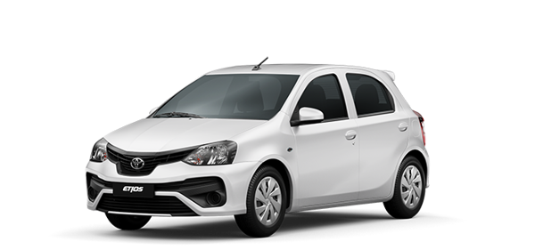
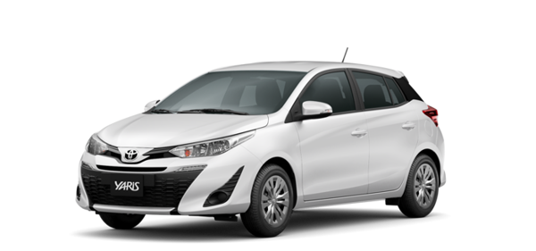
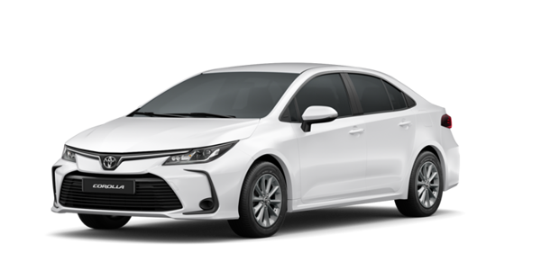

Toyota Motor Corporation (TMC) (em Japonês: トヨタ自動車株式会社) é um fabricante automotivo japonês com sede na Toyota, província de Aichi, no Japão. Em março de 2014, a corporação multinacional era composta por 338.875 funcionários em todo o mundo e, em fevereiro de 2016, era a 13ª maior empresa do mundo por receita. A Toyota foi o maior fabricante de automóveis em 2012 (por produção) à frente do Grupo Volkswagen e da General Motors. Em 25 de julho de 2012, a companhia relatou a produção de seu veículo número 200 milhões.
A Toyota é a primeira fabricante de automóveis do mundo a produzir mais de 10 milhões de veículos por ano. Fez isso em 2012 de acordo com a OICA, e em 2013 de acordo com dados da empresa. Em julho de 2014, era a maior empresa listada no Japão por capitalização de mercado (vale mais do que o dobro da segunda classificada, a SoftBank) e por receitas.
Em 2016, comercializou 10,18 milhões de unidades, somando as marcas Toyota, Lexus, Daihatsu e Hino Motors. Desta maneira, ficou abaixo dos números da sua concorrente, a europeia Grupo Volkswagen (10,3 milhões em vendas), ocupando o 2° lugar no ranking em vendas mundiais de veículos.
A Toyota é a líder mundial em vendas de veículos elétricos híbridos e uma das maiores empresas que incentivam a adoção de veículos híbridos em todo o mundo. As vendas globais acumuladas dos modelos de automóveis de passageiros híbridos da Toyota e da Lexus ultrapassaram o marco de 9 milhões em abril de 2016. A família de automóveis Prius constituem os modelos híbridos mais vendidos do mundo, com quase 5,7 milhões de unidades vendidas até 30 de abril de 2016.
A empresa foi fundada por Kiichiro Toyoda em 1937, como uma subsidiária da empresa de seu pai, a Toyota Industries, para criar automóveis. Três anos antes, em 1934, enquanto ainda era um departamento da Toyota Industries, criou seu primeiro produto, o tipo A, e, em 1936, seu primeiro carro de passageiros, o Toyota AA. A Toyota Motor Corporation produz veículos sob cinco marcas: Toyota, Hino, Lexus, Ranz e Daihatsu. Também detém uma participação de 16,66% na Fuji Heavy Industries, uma participação de 5,9% na Isuzu, uma participação de 3,58% na Yamaha Motor Company e uma participação de 0,27% na Tesla Motors, bem como joint-ventures na China (GAC Toyota e Sichuan FAW Toyota Motor), Índia (Toyota Kirloskar), República Tcheca (TPCA), juntamente com várias empresas "não automotivas".
| Categorias | Nomes | Informação |
|---|---|---|
| Passeio | Etios  |
|
| Yaris  |
|
|
| Corolla  |
|